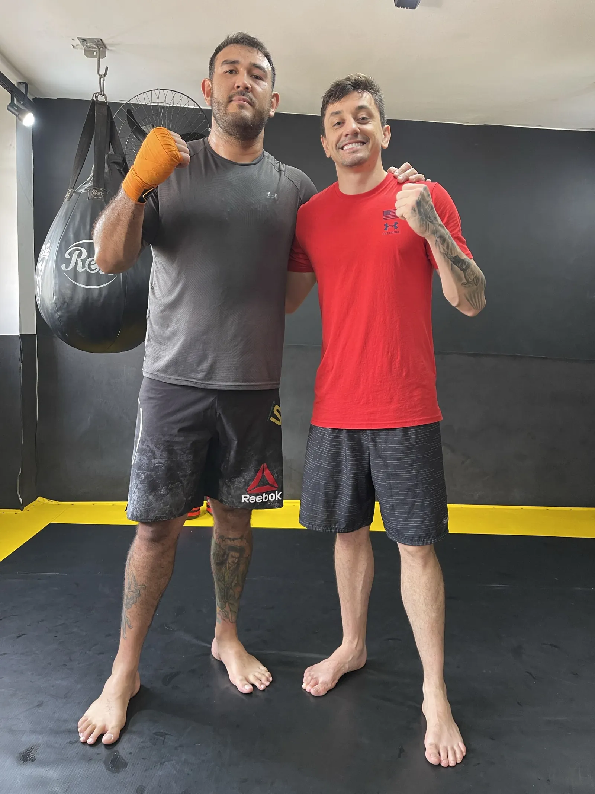

Muay Thai or boxing? Or MMA, karate, krav maga?
Every combat sport solves a different problem. Boxing teaches hands like nothing else. Jiu-Jitsu rules when the fight goes down. Krav maga sells itself as the answer to the street. Here I tell you what each really gives you, where Muay Thai wins and, just as honestly, where it doesn't.

I teach Muay Thai, MMA and self-defence. I don't teach boxing, kickboxing, karate or krav maga, and for now not Jiu-Jitsu. If after reading this you think one of those suits you better, I'll confirm it myself.
Seven combat sports, compared on what matters.
A coach's assessments, not absolute truths. A great karate coach will make you better than a bad Muay Thai coach.
| Boxing | Kickboxing | MMA | Jiu-Jitsu | Karate / taekwondo | Krav maga | Muay Thai | |
|---|---|---|---|---|---|---|---|
| Weapons you learn | Fists | Fists and kicks | Everything, standing and ground | Grips and submissions | Fists and kicks, lots of forms | Simple strikes and disarms | Fists, elbows, knees, shins and clinch |
| Fitness per hour | Very high | Very high | Very high | High | Medium | Medium | Very high |
| Time to feel competent | Months | Months | A year or more | A year or more | Years, by belt | Weeks, but shallow | Weeks for the basics, years for the clinch |
| Real self-defence | Good at mid range | Good | Very good, but long to learn | Very good if grabbed | Limited under stress | Its purpose, without a physical base | Very good standing and close, with a real physical base |
| If you're grabbed | Nothing | Little | Yes | Its speciality | Little | Some | Clinch and knees |
| Head-strike risk | High, it's the target | Medium | High | Very low | Low | Low | Low without sparring, and with me you don't need it |
| Where to learn it in the Axarquía | Boxing clubs | Few places | With me (base) | Jiu-Jitsu academies | Traditional schools | Málaga city | With me, one-on-one |
Five advantages of Muay Thai over the rest.
It's the most complete standing art
Boxing and kickboxing are subsets: everything they do, a Thai boxer does. And Muay Thai adds elbows, knees and clinch, which are what decides a close-range situation.
The fastest curve to something useful
In ten sessions you can move, strike with effect and keep distance. Jiu-Jitsu and MMA need a year for the same. Karate, belts.
Simple strikes that work when tired
Muay Thai prefers the powerful simple strike to the spectacular combo. Under stress, simple is what comes out. It's the same philosophy as serious self-defence.
You can train it for life without head strikes
Technique, pads and clinch are a complete workout without sparring. In boxing the target is the head; here you don't need to take hits to learn.
It's the perfect base for everything else
If one day you want MMA, you already have the striking and the clinch. If you want self-defence, you already have the tools. Almost nobody regrets starting here.
When I'd tell you to pick another sport.
You only want hands and to compete soon
Boxing teaches hand work and head defence better than anyone, and there's a club in every town. If kicks don't interest you, it's a great choice.
You don't want to give or take strikes
If what holds you back is getting hit, here's my side: I don't teach Jiu-Jitsu right now, but with Muay Thai you don't have to spar. We work only on technique, balance and cardio.
Muay Thai lessons →Pick MMA ifYou want the complete sport and have time
Striking plus grappling. It's the most demanding and the longest to learn. I teach it, but a beginner almost always gets six months of Muay Thai first.
MMA lessons →The comparisons people ask me most.
Muay Thai or boxing to start?
If you want to learn to use your whole body and a base for defending yourself, Muay Thai. If you're only interested in hands and competing as soon as possible, boxing. Both are good schools of discipline.
Muay Thai or MMA?
Muay Thai is a part of MMA. Almost every MMA fighter I've trained has a Muay Thai base. Start with Thai; we add MMA once the base is there.
Muay Thai or krav maga for self-defence?
Krav maga sells techniques for the street, but usually lacks a physical base and repetitions under fatigue. Muay Thai gives you that base. I add the avoidance and decision layer, which is what krav maga does well.
Is karate or taekwondo better for kids and Muay Thai for adults?
Karate and taekwondo have a belt structure that works well with children. For an adult who wants practical results, Muay Thai gets there sooner. I train adults.
What's the best combat sport for getting fit?
Any striking sport: boxing, kickboxing and Muay Thai burn about the same. Muay Thai adds that you learn more tools in the same hours.
Decided? Try it for an hour.
€30 for the first session, gloves included. And if I think another sport suits you better, I'll say so.
Muay Thai or kickboxing?
The two close cousins, in detail.